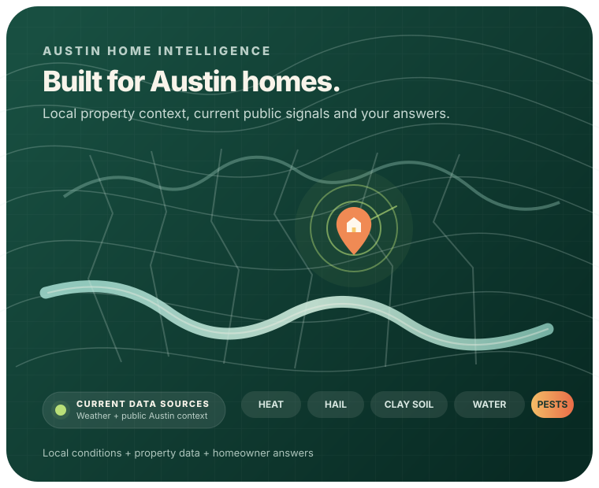
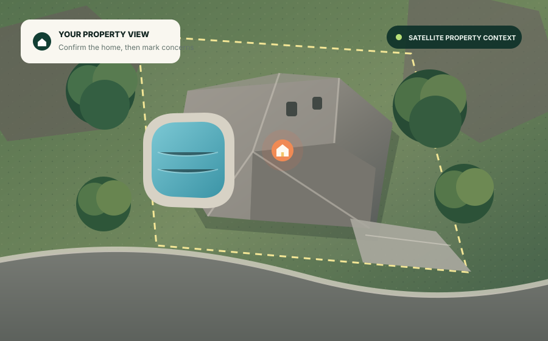

Austin watering rules
Conservation Stage
Automatic residential irrigation is limited to one designated day per week, with time-of-day limits.
Rule status: currentLast checked: Aug 21, 2026
See Austin watering rules →Home maintenance is tough to keep up with. Get a personalized Home Risk Report that shows what deserves attention first, what you should watch, and what probably isn’t worth spending money on yet.

The AC. The roof. Trees. Plumbing. Insurance. That weird stain you’ve been meaning to look at.
Before long, the list never ends. The hard part isn’t knowing that houses need maintenance. It’s knowing which of the many things that could be done are the things that actually need doing.
Waiting too long can turn cheap maintenance into an expensive repair. Doing work too soon wastes money too. And once you start calling companies, wildly different quotes can make it harder to separate the two.
You need a way to decide what matters before someone starts selling you the fix.
Enter your address and answer a few simple questions about what you’ve noticed. We combine those answers with relevant property and Austin context to narrow down what deserves attention.

Older equipment plus cooling symptoms make this worth a closer look before peak demand.
Mature limbs near the structure are worth monitoring, especially after strong wind or storm damage.
No strong symptoms? Cleaning may not be the first place to spend money.
A risk score helps you prioritize. It does not mean something is definitely broken and does not replace an onsite professional inspection when one is needed.
You don’t have to run the whole report if one thing is already bothering you. Choose an area, answer a few quick questions, and get a personalized risk score, warning signs to watch for, and guidance on what to do next.
Is your AC struggling—or just getting older? Look at cooling problems, high bills, weak airflow, repair history and system age.
Concerned about a leak, water heater or pressure? Check current symptoms, past leaks, drains and freeze history.
Not sure what those signs mean? Work through what you’ve noticed and whether it looks worth acting on now.
Could that tree become a problem? Check roof clearance, dead limbs, lean, storm damage and other warning signs.
Do your ducts actually need cleaning? Check your symptoms first. Cleaning may make sense—or it may be unnecessary.
See a stain or smell something musty? Use leak history, odors, stains and moisture signs to narrow down the issue.
Is your pool losing too much water? Compare normal evaporation with clues that may point to a leak or equipment issue.
Could there be a gap hiding in your policy? Review deductibles, coverage questions and property changes before a claim.
You shouldn’t have to treat every maintenance task like an emergency. Focus on the small number of issues that may matter most, then work down the list.
Good maintenance can prevent a much bigger bill later. But unnecessary maintenance costs money too. We want to tell you when watching or waiting may be reasonable.
Use local cost context, rules and practical advice to get your bearings first. If professional help makes sense, compare options with more context before making a decision.
Your house doesn’t exist in a vacuum. Location, age, weather, public records, local rules and changing service costs can all add useful context.
Property facts, system age, homeowner symptoms, current weather and other evidence that can reasonably change what deserves attention first.
Wages, construction costs, insurance-loss trends, regulations, vendor services and pricing can help explain options—but they do not automatically make a home risk score higher.
Where available, property records add context such as location and past permitted work.
Building, electrical, mechanical and plumbing permit history can add useful context around older systems and renovations.
Heat, freezes, storms, rainfall and drought change which parts of an Austin home are under the most stress.
Regional loss data adds context around wind, hail, water and fire without pretending it predicts what will happen to your house.
Austin wage, vendor and repair-pricing data can help put maintenance, repair and replacement decisions into perspective.
Tree rules, watering restrictions, permits, mold requirements and licensing can change what you are allowed—or required—to do.
Housing-stock and construction data can add context around the types and ages of homes common in the area.
Location-based energy models can add context when you are thinking about roof condition, energy use or solar.
Important modules show the source period and when the information was checked. Public facts stay separate from estimates and risk models.
Automatic residential irrigation is limited to one designated day per week, with time-of-day limits.
Checking the current Austin forecast.
Building, electrical, mechanical and plumbing records span 1980-present and are published as a daily-updated dataset.
Paid losses across major homeowners categories. Wind and hail averaged 62% of homeowners losses since 2019.
Mean hourly wage for construction and extraction occupations in the Austin-Round Rock-San Marcos metro.
Location-based models can estimate potential production. They are decision context—not a roof inspection or contractor quote.
You shouldn’t need five browser tabs to understand one home decision. Our guides combine local rules, primary sources and plain-English explanations.
See when mechanical permits may apply and what to check before work starts.
Read the HVAC permit guide → Trees · Austin rulesUnderstand protected-tree rules and when extra review may be required.
Read the Austin tree guide → Water · Current rulesCheck the current stage, designated schedule and rules for different irrigation methods.
Check current watering rules → Ducts · EPA contextStart with the symptoms that make cleaning more reasonable—and the ones that may point somewhere else.
Read the duct cleaning guide → Mold · Texas rulesUnderstand Texas mold roles and licensing before hiring someone to assess or remediate a problem.
Read the mold guide → Water damage · ChecklistKnow what to shut off, what to document and when moisture becomes a bigger concern.
Read the water damage guide → Insurance · RoofsLearn how storm damage, roof age, deductibles and coverage type can affect a claim.
Read the roof insurance guide → Seasonal · AustinSee which home systems deserve more attention as Austin conditions change through the year.
See the seasonal risk calendar →A risk score should help you make a decision—not make a problem sound scarier than it is.
Official rules, public records, published weather data and other source-backed information.
The symptoms, history and concerns you tell us about your home.
Potential costs, modeled values or other figures that depend on assumptions.
Rules and models that help put issues in priority order—not predictions that something will fail.
You should be able to check the sources behind advice about your home. Austin Home Intelligence uses public and trusted sources when they can improve a homeowner decision.
Explore Our Sources & Data →A contractor may be exactly what you need. But sometimes the right answer is maintenance. Sometimes it is another opinion. Sometimes it is simply keeping an eye on something for a while.
That’s the standard the report is built around.
You don’t need to fix everything today. You just need to know what matters, what can wait, and where your next dollar will do the most good.
Get My Home Risk Report →A few quick questions now could help you avoid a much more expensive surprise later.No. No one visits your home, and Austin Home Intelligence does not remotely inspect the inside of your house. Your Home Risk Report uses the information you provide plus relevant public, property and Austin-area data to help decide what may deserve attention. It does not replace an onsite inspection when one is needed.
Your address helps us replace a generic national checklist with information that may be relevant to your property and location, including public property information, local rules, permit history, weather and other location-based signals where available.
Not automatically. A score helps put an issue in context. Your result may suggest acting soon, checking something yourself, watching it for changes or getting a professional opinion. When the evidence does not support urgent work, we want to tell you that too.